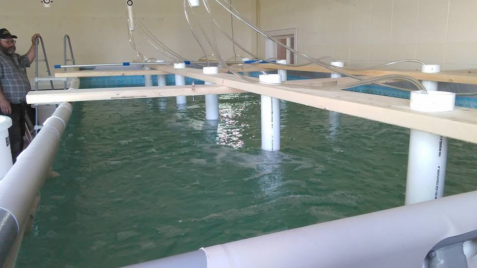

Welcome to Spring Valley Aquaculture!
Located in Newton, Wisconsin, Spring Valley Aquaculture is a family-owned fish farm that brings a unique and innovative approach to Wisconsin agriculture. Established in 2016 inside the former Meeme Elementary School, the business transformed a once-vacant school building into an indoor aquaculture facility. Originally specializing in Pacific white shrimp, Spring Valley Aquaculture later transitioned to raising tilapia, bringing locally grown seafood to the heart of Wisconsin.
Through indoor aquaculture, Spring Valley Aquaculture demonstrates that raising fish doesn't have to be limited to coastal communities. By combining modern farming techniques with small-town ingenuity, the business offers a unique alternative to traditional seafood production while supporting local agriculture.
Spring Valley Aquaculture is an example of how creativity, dedication, and resourcefulness can breathe new life into a community. From its beginnings in a former elementary school to its development as a local fish farm, its story highlights the possibilities of aquaculture right here in Wisconsin.